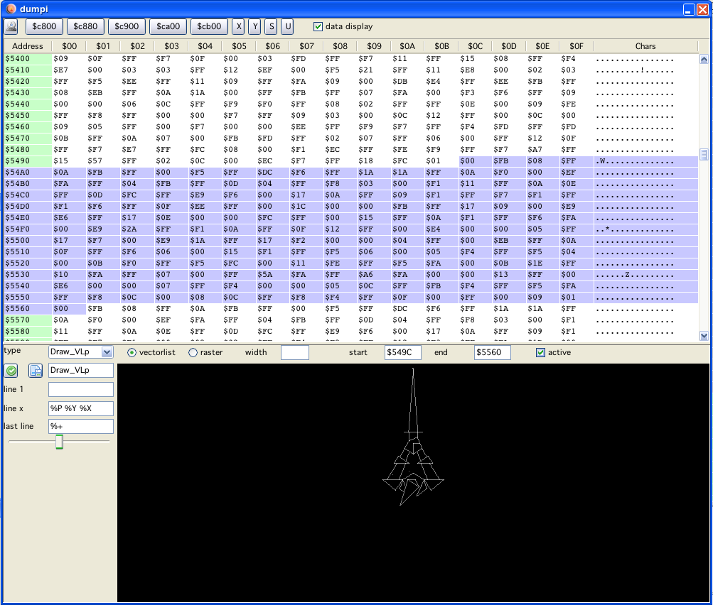

dumpi window
dumpi window
In the top row there are buttons to jump directly to RAM locations. Followed by 16bit register buttons. Pressing the later also jumps to the address the "pressed" register points to.
On the top left is a checkbox called "data display". If selected, the dumpi window is split, and in the bottom part a vector/raster display is shown.
This displays when "active" (a checkbox below the table) either a "raster" image (a vector representation of a bitmap) or a vectorlist.
These modes are selectable by the two radiobuttons.
The selection that is displayed can be chosen by three differen means:
in the dumpi window: left click on start address, shift left click on end address
the selection in dissi is taken immediately as selection in dumpi (when active)
direct editing of start/end address in textfields
The selected values are highlighted light blue in the dumpi-table.
The data selected can be displayed as a vectorlist. The configuration of the vectorlist types that are supported (or can be configured) are the same as described in vecci (import). For a detailed description see there...
Raster data (images or fonts) can also be displayed (large amount of selected data slows down vide, remember in java to not place heavily updated windows above each other, they will trigger updating each other...).
The user still has to figure out:
start of the data
end of the data
how many bytes constitute one "line"
For images the last one is usually not to big (10 bytes are already a 80 bit wide image).
For fonts the width is usually the number of characters that the font consists of. (e.g. BerzerkArena has a font with 108 characters, so the width is 108)

dumpi example 2 vectorlist display